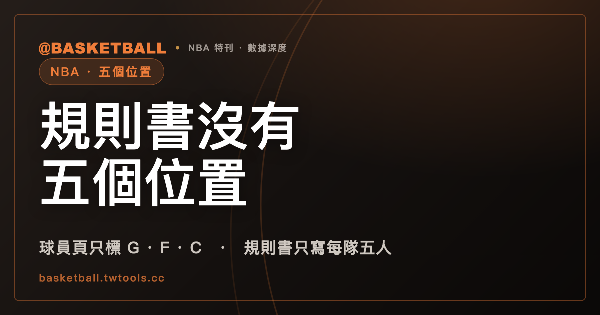

NBA 規則書沒有定義五個傳統位置，NBA.com 球員頁只標後衛、前鋒、中鋒
控球後衛、得分後衛、小前鋒、大前鋒、中鋒這五個位置，NBA 2025-26 規則書沒有定義，NBA.com 的球員資料頁也只標後衛、前鋒、中鋒及其組合（2026 年 9 月 25 日的網站標籤）。所謂「位置模糊」，先分清談的是資料標籤、教學分類，還是場上分工，就不容易被說法帶著走。

新手村｜陣容入門・五個位置
打開 NBA.com 的球員頁，四位球員的標籤是這樣的：Luka Dončić 是 Forward-Guard，Nikola Jokić 是 Center，Stephen Curry 是 Guard，Victor Wembanyama 是 Forward-Center。這是各球員頁標題在 2026 年 9 月 25 日的樣子。控球後衛、得分後衛、小前鋒、大前鋒這幾個名稱，沒有一個出現在標籤上。
第一次認真看球賽，可能會以為這五個位置是規則書排好的座位。這篇文章要拆的就是這個印象。讀完之後，你可以自己做一件事：聽到有人說「位置模糊」，判斷他談的是資料標籤、教學分類，還是場上分工。
NBA.com 球員總表上，只有 7 種位置標籤，沒有 PG、SG、SF、PF
2026 年 9 月 25 日取得的 NBA.com 球員總表頁面（nba.com/players），內嵌資料的 POSITION 欄共有 574 筆記錄，只出現 7 種值。下表是各值的筆數，數字是那個時點的統計，不是永久設定。
| 標籤 | 意思 | 筆數 |
|---|---|---|
| G | 後衛（Guard） | 233 |
| F | 前鋒（Forward） | 184 |
| C | 中鋒（Center） | 69 |
| G-F | 後衛與前鋒的組合 | 37 |
| F-C | 前鋒與中鋒的組合 | 24 |
| C-F | 中鋒與前鋒的組合 | 16 |
| F-G | 前鋒與後衛的組合 | 11 |
自己算一次：三個單字母標籤加起來是 486 筆，四個連字組合加起來是 88 筆，合計 574 筆。
這是 NBA.com 自己的標註，不是聯盟規則。球員資料頁上的位置會隨資料更新而變，所以上表只代表 2026 年 9 月 25 日那個時點。
NBA 2025-26 規則書規定每隊五人，先發名單只交姓名與背號
NBA 2025-26 規則書的 Rule 3 第 I 節寫得很短：每隊五名球員（"Each team shall consist of five players."）。第 II 節說明開賽前的先發名單：記錄員拿到的是每位先發球員的姓名與背號，沒有要求提供位置。
再看整份規則書。全文找不到 point guard、shooting guard、small forward、power forward 這幾個詞，也找不到 positionless。文中其他出現 position 的地方，指的是防守站位、低位（post-up position）這類場地或身體姿勢。
有一處要交代。Rule 2 第 VII 節 (b) 寫記錄員要記錄球員的姓名、背號與 positions（"names, numbers and positions of the players"），所以不能說規則書沒有出現過 position 這個字。但規則書沒有說明這個 positions 指哪一種位置。合起來能站得住的說法是：NBA 2025-26 規則書沒有定義五個傳統位置，也沒有依位置給任何權利或限制。
FIBA 的規則書是類似的情況，但版本要交代清楚。FIBA Official Basketball Rules 2026 的封面寫 "Valid as of 1st October 2026"，自 2026 年 10 月 1 日起有效，2026 年 9 月 25 日這天還沒生效，所以這裡只當作版本比較，不當現行規則。它的 Article 4.2.2 寫比賽時每隊場上有 5 名隊員（"During playing time 5 team members from each team shall be on the court and may be substituted."），全文同樣找不到五個傳統位置的名稱與 positionless。FIBA 目前仍在生效的版本，這篇沒有逐條對照。
Jr. NBA 的教學頁，把五個位置列成 assigned basketball positions
五個位置的名稱與職責，在 NBA 官方的青少年頁面 Jr. NBA 找得到。頁面標註 2015 年 9 月 23 日發表，頁尾是 © 2026。頁上的原句是："Players in a basketball game have assigned basketball positions: center, power forward, small forward, point guard, and shooting guard."
這句話與上一節放在一起，有出入：NBA 2025-26 規則書沒有指派這五個位置，Jr. NBA 的頁面卻用了 assigned。這篇把它讀成 Jr. NBA 的教學說法，不當作規則。
下表是 Jr. NBA 的教學說法。中文是轉述，英文是原句：
| 位置 | Jr. NBA 的教學說法 | 原句 |
|---|---|---|
| 控球後衛（point guard） | 帶領進攻，通常是隊上運球與傳球都拔尖的球員 | "The point guard runs the offense and usually is the team’s best dribbler and passer." |
| 得分後衛（shooting guard） | 通常是隊上投籃拔尖的球員 | "The shooting guard is usually the team’s best shooter." |
| 小前鋒（small forward） | 同時對上體型小與體型大的對手 | "The small forward plays against small and large players." |
| 大前鋒（power forward） | 做許多中鋒做的事：在籃框附近打球、搶籃板、防守個子更高的球員 | "The power forward does many of the things a center does, playing near the basket while rebounding and defending taller players." |
| 中鋒（center） | 個子在每隊排第一，在籃框附近打球 | "The center is the tallest player on each team, playing near the basket." |
讀這張表要留意三個限定。第一，兩個 usually 表示傾向，不是定義。第二，"the tallest player on each team" 是 Jr. NBA 的簡化說法，不是測量標準，這篇不把它延伸成一般事實。第三，這些職責描述都是 Jr. NBA 的說法；這篇引用的規則書沒有描述任何位置的職責。
中文譯名沿用本站既有的用法：控球後衛（也簡稱控衛）、得分後衛、中鋒，大前鋒與小前鋒則寫成中文加英文原文。這些譯名只是本站的用字，不是規則書或官方資料頁的用語。看到別處把同一個位置寫成不同名稱時，回到英文原文對照，比猜中文對應可靠。
2022 年 All-NBA 還分 2 後衛、2 前鋒、1 中鋒，2025-26 賽季已經不分位置
NBA 總裁 Adam Silver 用過 positionless basketball 這個說法。2022 年 6 月 3 日 NBA.com 的報導（作者 Steve Aschburner）引述他在 Chase Center 開賽前約一小時說："We’re a league that has moved increasingly to positionless basketball."
同一篇報導接著寫，當年的 All-NBA 仍照傳統選人：三個榮譽隊各有兩名後衛、兩名前鋒、一名中鋒（"two guards, two forwards and one center"）。明星賽先發的投票，也分成兩個 "backcourt" 名額與三個 "frontcourt" 名額。也就是說，總裁說出這個詞的同一篇報導裡，選人作業仍照位置分。
後來的官方作業不一樣了：
| 項目 | 2022 年的作法 | 後來的作法 |
|---|---|---|
| All-NBA | 三個榮譽隊各選 2 名後衛、2 名前鋒、1 名中鋒 | 2025-26 賽季：三隊各 5 人，"regardless of position"（NBA 官方新聞稿，2026 年 5 月 24 日） |
| 明星賽先發 | 2 個 backcourt 名額、3 個 frontcourt 名額 | 2026 明星賽："This year, the All-Stars will be selected without regard to position."（NBA.com，2025 年 12 月 17 日開始投票的 2026 明星賽投票頁） |
中間是哪一年改的，查不到官方公告，所以只並列兩個時點。這幾段引文只顯示聯盟用過這個詞、也改了選人作業，引文本身沒有替 positionless basketball 下定義。它是描述，不是規則：NBA 2025-26 規則書與 FIBA 2026 年版規則書都找不到這個詞。
「位置模糊」談的是哪一層：資料標籤、教學分類，還是場上分工？
把前面四節攤開，同一個「位置」在不同地方是不同的東西：
| 層 | 誰在說 | 這篇引用的內容 |
|---|---|---|
| 規則書 | NBA 2025-26 規則書；FIBA 2026 年版規則書 | 每隊五人；沒有定義五個傳統位置 |
| 資料標籤 | NBA.com 球員頁與總表（2026 年 9 月 25 日） | G、F、C 與連字組合 |
| 教學分類 | Jr. NBA 的教學頁 | 五個位置與職責描述，部分帶 usually |
| 選人作業 | NBA 官方新聞稿與 NBA.com | 2025-26 All-NBA 與 2026 明星賽不分位置 |
| 場上分工 | 比賽裡球員實際做的事 | 這篇引用的官方資料沒有描述這一層，要看比賽本身 |
「位置模糊」這句話，可能同時指這幾層。它可能是說資料標籤只有三類；可能是說某位球員的作為跟教學頁的描述不同；也可能是說場上分工在變。三件事需要不同的證據。
自己判一次。以下四句都是假設的例子，不是引述：
- 「這位球員在 NBA.com 上是 Forward-Guard。」這是資料標籤。看 NBA.com 頁面就能確認，而且它只代表那個時點的網站標註。
- 「先發五人裡沒有中鋒，是不是違規？」問的是規則層。NBA 2025-26 規則書的先發名單只交姓名與背號，沒有要求位置，規則書也沒有依位置給任何限制。這個問題問錯了層：位置不是規則書定義的資格。
- 「他打得不像傳統的大前鋒。」這是拿教學分類當尺，量場上分工。尺可以用 Jr. NBA 對 power forward 的說法：在籃框附近打球、搶籃板、防守個子更高的球員。但球員實際做了什麼，只能靠看比賽。
- 「聯盟已經把位置廢掉了。」這句話把兩件事混在一起。上一節的兩個例子，只證明 2025-26 All-NBA 與 2026 明星賽的選人作業不分位置。NBA 2025-26 規則書本來就沒有定義五個傳統位置，而 NBA.com 的資料頁在 2026 年 9 月 25 日仍標 G、F、C 與連字組合。說「廢掉」，等於說選人作業、規則書、資料標籤三層都在同一天改了，手上的引文撐不住這麼大的說法。
四句判完，可以歸納成聽到位置說法時的三個問題：這句話出自哪一層？那一層有沒有白紙黑字？這句話有沒有把兩層混成一層？
挑一場比賽，把先發五人的 NBA.com 球員頁標題讀一遍，再問自己：這些標籤，跟看到的場上分工對得上嗎？想從動作看分工，可以先看擋拆入門；想認識聯盟與球隊，可搭配NBA 完全指南。
常見問題
NBA 規則書有規定控球後衛、中鋒這些位置嗎？
沒有規定。NBA 2025-26 規則書沒有定義五個傳統位置，也沒有依位置給任何權利或限制：Rule 3 只規定每隊五人，先發名單只交姓名與背號。Rule 2 的記錄員條文有 positions 這個詞，但規則書沒有說明它指哪一種位置。FIBA Official Basketball Rules 2026（封面標示 2026 年 10 月 1 日起有效，2026 年 9 月 25 日尚未生效）同樣找不到五個傳統位置的名稱；FIBA 目前仍在生效的版本，這篇沒有逐條對照。
NBA.com 怎麼標球員的位置？
依 2026 年 9 月 25 日的網站標籤，個別球員頁標題用 Guard、Forward、Center 與連字組合（例如 Forward-Guard）；球員總表的 POSITION 欄在該時點有 574 筆記錄，只有 C、C-F、F、F-C、F-G、G、G-F 這 7 種值。這是 NBA.com 自己的標註，不是規則書的規定，也會隨資料更新而變。
Jr. NBA 怎麼描述控球後衛？
Jr. NBA 的教學頁說控球後衛帶領進攻（"runs the offense"），通常是隊上運球與傳球都拔尖的球員；其中 usually 表示傾向，不是定義。這個說法來自青少年教學頁（2015 年 9 月 23 日發表），不是 NBA 2025-26 規則書或 FIBA 規則書的規定，另外四個位置的描述也是同一頁的教學說法。
「無位置籃球」是規則嗎？
不是。NBA 總裁 Adam Silver 在 2022 年 6 月 3 日 NBA.com 的報導中用過 positionless basketball 這個說法，聯盟的 2025-26 All-NBA（官方新聞稿，2026 年 5 月 24 日）與 2026 明星賽選人（2025 年 12 月 17 日開始投票）也改成不分位置。但這些是選人作業與描述，引文本身沒有給定義；NBA 2025-26 規則書與 FIBA 2026 年版規則書都找不到這個詞。
資料來源
- NBA Official Playing Rules 2025-26（Rule 2 第 VII 節、Rule 3 第 I 與 II 節）：ak-static.cms.nba.com/Official-2025-26-NBA-P…
- FIBA Official Basketball Rules 2026（封面標示 Valid as of 1st October 2026；Article 4.2.2）：assets.fiba.basketball/documents-corporate-fi…
- NBA.com 球員頁（2026 年 9 月 25 日取得）：nba.com/luka-doncic 、nba.com/nikola-jokic 、nba.com/stephen-curry 、nba.com/victor-wembanyama
- NBA.com 球員總表（2026 年 9 月 25 日取得）：nba.com/players
- Jr. NBA，Basketball Positions（頁面標註 2015 年 9 月 23 日發表，2026 年 9 月 25 日取得）：jr.nba.com/basketball-positions
- NBA.com，Adam Silver 年度總冠軍賽記者會報導（2022 年 6 月 3 日）：nba.com/nba-commissioner-adam-…
- NBA 官方新聞稿，2025-26 Kia All-NBA Team（2026 年 5 月 24 日）：pr.nba.com/2025-26-kia-all-nba-te…
- NBA.com，2026 All-Star 投票（2025 年 12 月 17 日開始）：nba.com/2026-all-star-voting-s…